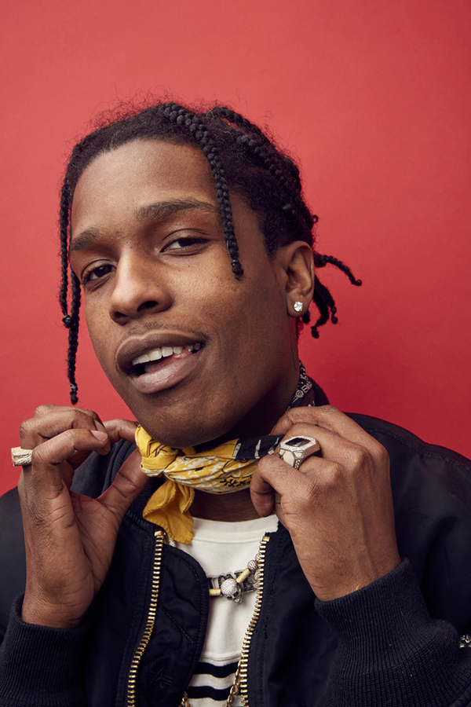

Biographie
Jeunesse
Né le 3 octobre 1988 à Harlem, aux États-Unis, Rakim Mayers, alias ASAP Rocky, est un rappeur new-yorkais, membre du groupe de hip-hop A$AP Mob. Influencé par son frère, A$AP Rocky s’initie au rap dès son plus jeune âge. Des événements tragiques liés à la drogue convainquent l’adolescent de ne pas tomber dans l’univers du trafic. Le rap, avec des chanteurs comme Mobb Deep, Run -DMC ou encore Bone Thugs-N-Harmony, devient alors son échappatoire.
Carrière
En 2007, A$AP Rocky intègre le groupe A$AP Mob, et enregistre ses premières collaborations. Quatre ans plus tard, il publie la mixtape Deep Purple qui lui offre une certaine notoriété auprès des amateurs de rap. La même année, le single Purple Swag et le clip qui l’accompagne lui permettent de signer un contrat de plusieurs millions de dollars avec les géants Sony et RCA. S’ensuit, en 2013, la sortie de l’album Long. Live. ASAP. En 2015, A$AP Rocky s’entoure de Kanye West, Juicy J, Lil Wayne ou encore M.I.A pour son deuxième album, At. Long. Last. A$AP.
Activités annexes
A$AP Rocky ne cartonne pas que dans les charts. Son contrat de 3 millions de dollars signé avec Sony en 2011, dans le cadre duquel il a lancé son label, lui permet d’avoir une plateforme pour les artistes qu’il soutient. Il lance ensuite sa marque de vêtements en 2013, et collabore notamment avec le styliste Raf Simons. En 2014, il rejoint l’agence William Morris Endeavor. En février 2016, il lance une ligne en partenariat avec la marque Guess, baptisée GUE$$. A$AP Rocky s’illustre également sur le grand écran, puisqu’il fait en 2014 un caméo dans le film «Dope», présenté à Sundance l’année suivante. Il apparaît également en 2016 dans «Zoolander 2». Par ailleurs, il réalise lui-même certains de ses clips, comme «L$D», nommé aux Grammy Awards. Ci-dessous, on peut voir des couvertures de magazines d'A$ap Rocky.